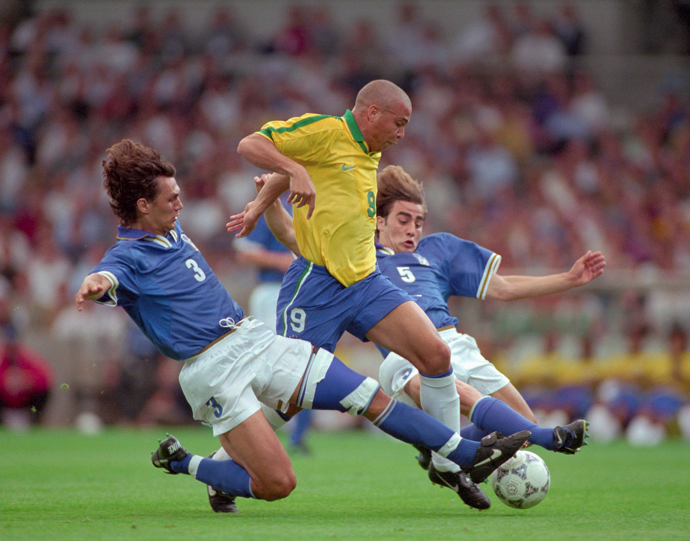
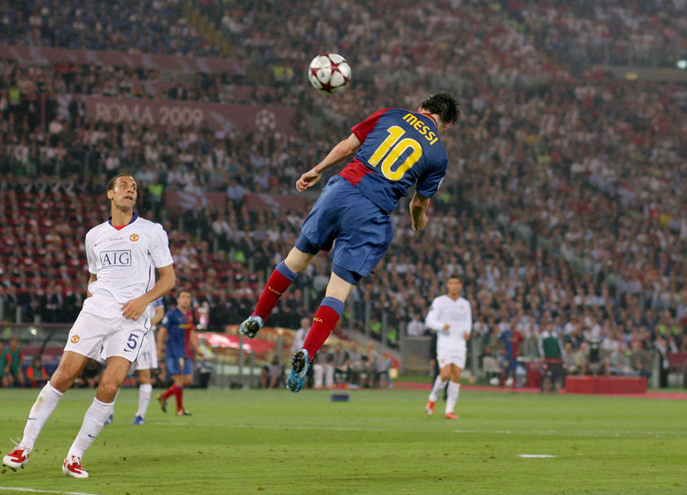
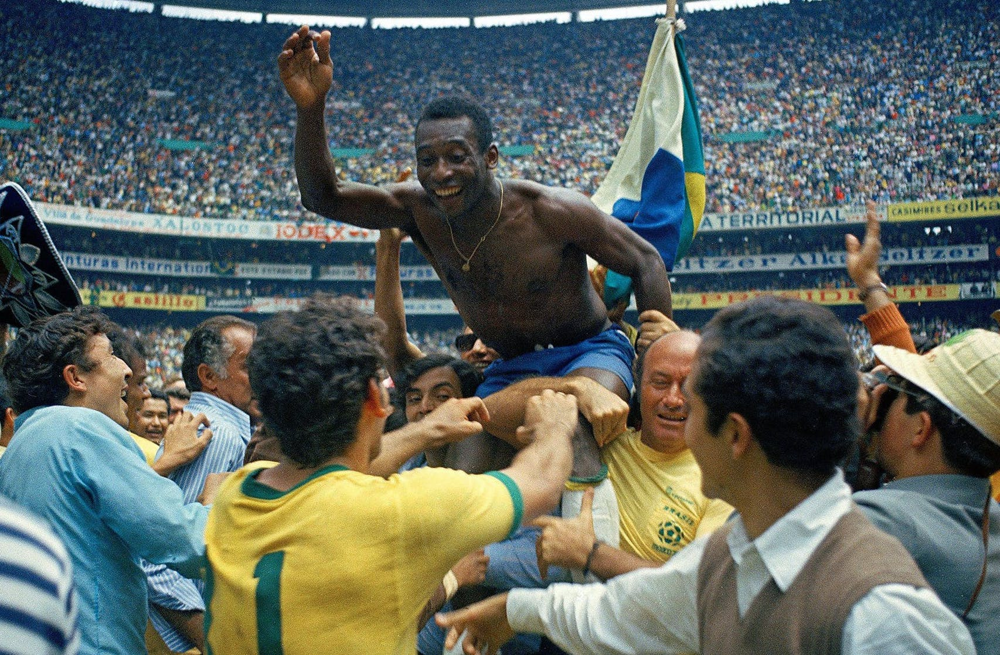
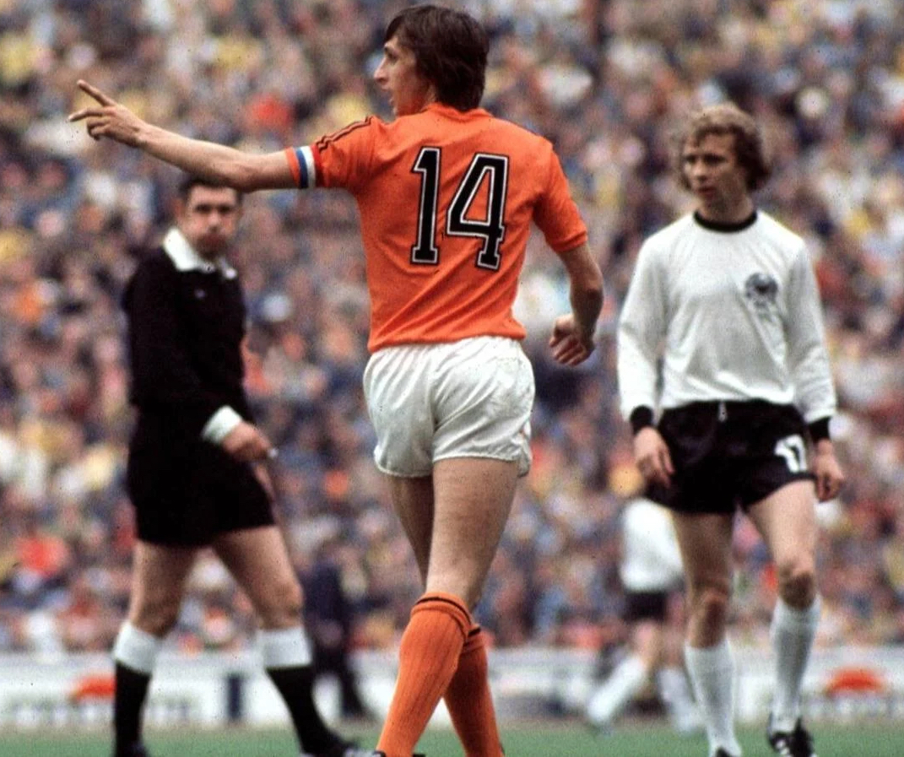

Ronaldo
1993-2011
Luís Nazário de Lima, O Fenomeno, R9, per tutti Ronaldo. Considerato l'attaccante più forte di tutti i tempi, nel 1993 inizia a giocare con la maglia del Cruzeiro, per poi andare in Europa ad indossare le maglie di PSV, Barcellona, Inter, Real Madrid, Milan e Corinthians, oltre a vincere due Mondiali con il Brasile. Veloce, potente, tecnico, preciso, un fisico pressoché perfetto, un giocatore che sembrava uscito da un videogioco e che invece era reale, che ha anticipato di vent'anni l'evoluzione iperatletica del calcio, ma senza rinunciare ad una tecnica al tempo stesso sublime ed essenziale. Altri giocatori hanno sicuramente avuto carriere migliori, ma nessuno, anche a detta di chi l'ha affrontato (tra cui alcuni dei difensori più forti di sempre, come Maldini e Cannavaro nella splendida foto sotto), ha mai raggiunto i suoi livelli di onnipotenza calcistica, che avremmo potuto apprezzare di più se non fosse stato colpito a ripetizione da drammatici infortuni. Nonostante tutto il ricordo del suo talento e l'ammirazione di chi l'ha potuto osservare rimangono invariati e ci portano a considerarlo come il calciatore più forte di sempre.
Fenomeno.
Lionel Messi
2003-in attività
Guardando ai titoli vinti e al numero di gol segnati, Messi meritava il primo posto in classifica, ma abbiamo preferito Ronaldo anche per il rimpianto di non aver avuto la possibilità di avere una carriera lunga e stabile a causa degli infortuni. Messi invece questa opportunità l'ha avuta, e l'ha sfruttata appieno: 7 (presto 8?) Palloni d'Oro, 4 Champions League, 11 campionati, un Mondiale e una Coppa America da assoluto protagonista, una lista lunghissima di record ma soprattutto un talento innato che gli ha fatto compiere magie su magie nella sua lunga carriera, passata quasi interamente al Barcellona che l'ha scoperto a 13 anni e con cui ha vinto tutto. Non ce ne vogliano i fan di Cristiano Ronaldo (con il quale ha segnato un'era nel nome della loro rivalità), ma pensiamo che sia più l’argentino a meritare un posto di diritto nell'Olimpo dei migliori calciatori di sempre, un po' per la recente impresa in Qatar, ma anche perché Messi ha saputo incarnare forse meglio di chiunque altro il talento assoluto, oltre ad essere stato anche una costante fonte di gioco per i compagni, cosa che a Cristiano è spesso mancata.
Meraviglia.
Pelé
1957-1977
Edson Arantes do Nascimento, conosciuto in tutto il mondo come Pelé, gioca praticamente tutta la carriera con la maglia del Santos, in un'epoca del calcio che è di transizione tra l'epoca precedente, in cui il calcio veniva seguito principalmente tramite radio o giornali, e l'epoca che sarebbe seguita, in cui i calciatori sarebbero diventati delle star, grazie alla televisione che ne avrebbe trasmesso le immagini. E Pelé fu proprio la prima celebrità calcistica, conosciuto in tutto il mondo, sin da adolescente quando, a 17 anni, vinse da protagonista assoluto il suo primo Mondiale in Svezia, nel 1958. Ne sarebbero seguiti altri due, oltre a due Coppe Libertadores e Coppe Intercontinentali, ma oltre ai trofei lui fu il primo fenomeno del calcio, il primo giocatore che con le sue giocate contribuì a rendere il calcio il fenomeno globale che è adesso. Ma soprattutto ha anticipato ogni giocata fatta dai calciatori che vennero dopo, anticipò molti stili di gioco e divenne un eroe per tutto il Brasile, tanto da essere dichiarato tesoro nazionale dal governo brasiliano per impedire che si trasferisse. Ma soprattutto fu la prima stella del calcio.
O Rei.
Diego Armando Maradona
1976-1997
Una delle figure più controverse e allo stesso tempo più amate della storia non solo del calcio ma di tutto lo sport. Un giocatore che ha rappresentato sia il vizio, con una vita vissuta sopra le righe, ma anche la virtù, diventando una figura antieroica celebre in tutto il mondo. Ma soprattutto è stato un genio calcistico, che nonostante una carriera all'apparenza non straordinaria con la maglia dei club, tra Boca Juniors, Barcellona e Napoli, e anche con l'Argentina guardando solo ai numeri ha avuto solo un picco, il Mondiale '86. Ma le vittorie vanno pesate, e ciò che ha fatto in carriera va contestualizzato considerando dove ha vinto. Ha portato alla vittoria l'Argentina, appena uscita da una terribile dittatura e umiliata dalla sconfitta nella guerra delle Falkland (vendicata dalla celebre Mano de Dios ai quarti di quel Mondiale), segnando la rivincita di un'intera nazione. Ha portato due volte alla vittoria il Napoli, città spesso bistrattata e poco considerata dal resto d'Italia fino ad allora, contribuendo al riscatto di un intero popolo. Oltre ad essere stato probabilmente il calciatore più talentuoso di sempre, ovviamente.
D10S.

Johan Cruijff
1964-1984
Esiste il calcio prima e dopo Cruijff: uno spartiacque come nessun altro è riuscito ad esserlo nella storia dello sport più popolare al mondo, ideale diventato realtà in campo. Inizia a giocare sin dall'età di 12 anni nelle giovanili dell'Ajax, passando in prima squadra nel 1964, rimanendoci per 10 anni per poi passare al Barcellona, oltre ad ottenere una finale mondiale con l'Olanda nel 1974. Immagine perfetta del calcio totale ideato dal suo allenatore all'Ajax Rinus Michels, che rivoluzionò il calcio stesso dando il via all'era moderna, i suoi 402 gol non pesano soltanto nel loro complesso, ma per il modo in cui sono stati realizzati: sia l'Ajax, l'Olanda e il Barcellona hanno inventato un nuovo modo di giocare. Grazie a lui, alla sua visione e al suo talento, proseguiti anche nella sua carriera di allenatore, in cui riuscì a dare la prima vittoria in Coppa dei Campioni al suo Barcellona, innovando ulteriormente quello sport di cui è stato la massima espressione di eleganza.
Rivoluzione.
